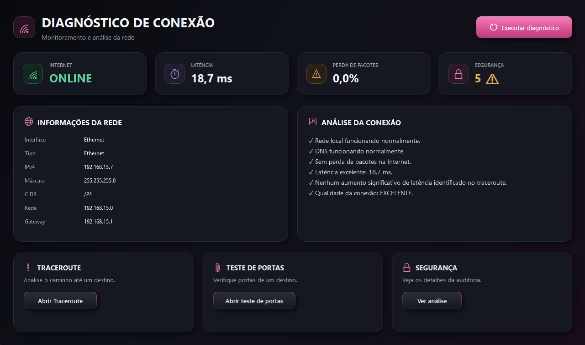

Diagnóstico de Conexão
Aplicação desktop desenvolvida em C# com WPF para realizar diagnósticos de conectividade de rede, verificando interface de rede, gateway, DNS, acesso à internet, latência, perda de pacotes e traceroute.
C#
.NET
WPF
Networking
TCP/IP